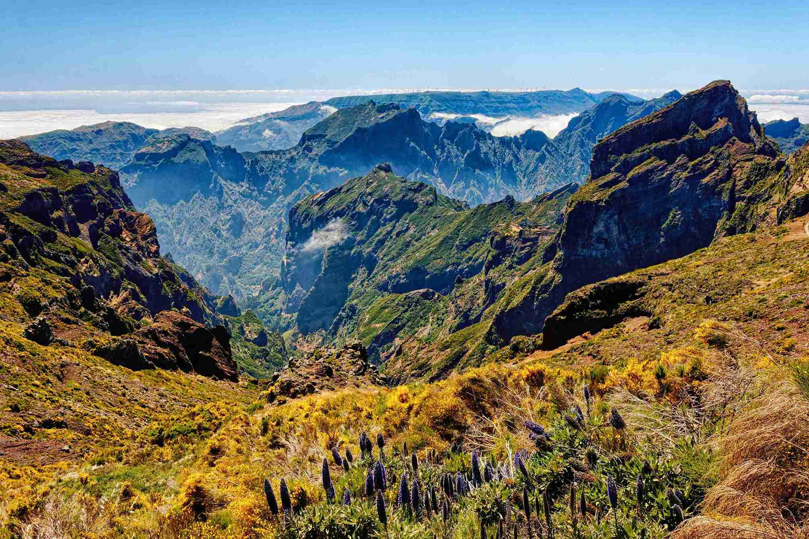

Mountains
- Styling Images -
Mount Pico do Areeiro in Madeira, Portugal

Original Image
CSS Filter Used: Grayscale
Copyright © Photo by
Yves Alarie
| Uploaded on August 2, 2021
Montserrat in Catalonia, Spain
Original Image
CSS Filter Used: Sepia
Copyright © Photo by
Alex Williams
| Uploaded on January 28, 2018
Vinicunca in Cusco, Peru
Original Image
CSS Filter Used: Hue-rotate
Copyright © Photo by
Eddie Kiszka
| Uploaded on February 7, 2020